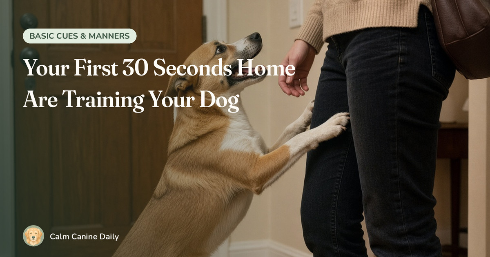

Your First 30 Seconds After You Walk In the Door Are Training Your Dog

The short answer. When your dog jumps when you come home, act boring for the first 30 seconds. Drop your bag, ignore the jumping, and wait for four paws on the floor. Then say hi in a low voice and pay a treat at chest height. If they jump again, turn away and wait. Practice this entrance when you have not actually been gone for hours.
This page is about you walking in — including the alone-all-day zoomies. If the jumper is a visitor, use our guide on how to stop a dog jumping on guests. The reunion, not the rest of the evening, is the rehearsal. A boring entrance beats a big, excited “I’m home!” that pays the jump.
This is a researched how-to, not a hands-on trial of this plan on a panel of dogs, and not a guaranteed calm hello.
Educational content only. Some links on this page are affiliate links. If you purchase through one, we may earn a commission at no extra cost to you. We do not impersonate or speak for any course creator.
About this article. Educational tips from Calm Canine Daily for everyday US owners. This is not veterinary advice, a diagnosis, or a promised result. We are not a certified training practice and we do not claim CPDT or DVM credentials. If you are worried about a bite risk or a situation you cannot manage safely, pause and get qualified in-person help.
Who this plan is for: dogs who bounce, spin, or jump on you at the door when you get home, and who can be redirected without a safety problem. Who this is not for: a dog who panics, injures themselves, or becomes unsafe when left alone, or a greeting that includes snapping or a bite risk. That needs a veterinarian or a certified in-person professional, not an online course.
Key takeaways
- Your hello is a training rep, whether you mean it to be or not.
- Excitement from you pays jumping. Four paws on the floor is what should get the greeting.
- Practice short absences — step out and come back in — so the real workday is not the first rehearsal.
- If they also bark or dart at the door, manage the threshold first, then run this entrance.
In this article
- Why your dog jumps when you come home
- What not to do
- The 30-second boring entrance
- How to practice without a real workday
- What to do if they also bark or dart at the door
- When to get extra help
- FAQ
Why your dog jumps when you come home
Jumping at homecoming works. It gets hands, eye contact, a high voice, and sometimes a full-body hug. Even “down, down, down” is attention. If the first 30 seconds are a party, your dog is learning that a wild greeting is how they get you back.
Dogs who have been alone all day often have leftover arousal to spend. That does not make them “dominant” or badly behaved. It makes the doorway a high-value moment. The plan is not to withhold affection forever. It is to delay the hello for a short, boring pause, then pay four paws on the floor.
What not to do
Don’t knee, shove, or yell. Those can inflame the scene, and some dogs treat a shove as more wrestling. They also still do not teach the greeting you want.
Don’t throw a huge excited reunion “just this once.” The exception is the lesson. If you want a quiet hello on a normal Tuesday, you have to greet like Tuesday when you are happy to be home too.
Don’t start the lecture while they are in the air. Wait for the moment all four paws land, then mark and say hi.
The 30-second boring entrance
- Walk in and be dull on purpose. Set down your bag, hang your keys, and keep your voice low.
- If they jump, turn slightly away, stand still, and wait. No eye contact, no “hey, hey.”
- The second all four paws are on the floor, mark it (“yes”) and greet them in a low voice. Pay a treat at chest height, or lower, so they do not have to jump to get it.
- If they jump again, turn away and wait. Pay the next four-on-the-floor moment.
- When they can stay down for a few seconds, you can pet, then go about coming home.
Thirty seconds is a target, not a punishment. Some dogs need a little longer pause; some settle faster. The point is that the greeting starts when they are on the ground, not when they are mid-air.
If they cannot land at all, they need more management (a leash already on, a baby gate you step through) or an easier practice session, described next.
How to practice without a real workday
The 6 p.m. homecoming after eight hours is a hard exam. Practice when the stakes are lower.
Step outside for ten seconds — to the porch, the mailbox, or the apartment hallway — then walk back in and run the boring entrance. Do a few reps. Pay four paws on the floor every time. Then go sit down as if you have been home all along.
When that is easy, stretch the time outside to a minute, then a few minutes. You are teaching the entrance, not practicing long absences. If your dog is worried when you leave, keep the out-and-back very short and talk to your veterinarian or a qualified professional before you turn this into a separation exercise.
What to do if they also bark or dart at the door
Some dogs do all three: bark at the approach, jump when the door opens, and try to shoot through the gap. Split the jobs.
Use a leash or a baby gate so the open door is safe, as in our door-darting plan. If the explosion starts with the chime, use the doorbell place plan. Then run the boring entrance once you are inside and the door is shut.
If they are too amped to think, give them a short potty trip or a moment behind the gate before you ask for the greeting. After the hello, a settle on a bed or mat helps the evening start quietly. See why a tired dog still won’t settle if they stay wound up long after you walk in.
When to get extra help
Get a veterinarian involved if homecoming chaos started suddenly, if it comes with signs of pain, or if your dog seems panicked when you leave or when you return. A calmer greeting plan is not a substitute for veterinary care, and it is not a treatment for separation-related panic.
Get a qualified trainer or behavior professional involved (CPDT-KA or CBCC-KA are one useful filter) if the greeting includes snapping, a body slam you cannot manage, or a bite risk. An article is not enough in those cases, and neither is an online course.
FAQ
Why does my dog go crazy when I come home?
The reunion is a huge social payoff after time alone, and jumping often gets attention. A big, excited “I’m home!” can add fuel. A short, boring entrance, then a quiet hello for four paws on the floor, starts a different habit.
How do I get my dog to greet me calmly?
Walk in quietly, ignore jumping, and wait for all four paws to land. Then say hi in a low voice and pay a treat at chest height. If they jump again, turn away and wait. Practice the entrance after short step-outs, not only after a full workday.
Should I ignore my dog when I walk in the door?
Ignore the jumping, not the dog forever. The pause is a short wait for a better greeting. Once they are on the floor, you should say hello. A total freeze with no payoff can leave some dogs frustrated and still without a plan.
How long should I wait before I say hello?
Long enough for four paws to stay on the floor — often about 30 seconds, sometimes less, sometimes a little more. The clock is less important than the rule: the greeting starts when they are down, not when they are in the air.
Is jumping when I come home different from jumping on guests?
Yes. Guests are a visitor problem, and you have to coach other people too. This page is about your reunion. The skill is similar — pay four paws on the floor — but the trigger is you walking in after being gone. Use the guests article for visitors and this one for your own hello.
Related guides
- How to Stop Your Dog From Jumping on Guests
- How to Stop Your Dog From Darting Out the Door
- How to Stop Your Dog From Barking at the Doorbell
- Why a Tired Dog Still Won’t Settle
- Brain Training for Dogs review
- More cues and manners guides
- Get the free 7-Day Calm Dog Checklist
Sources
Vendor facts about Brain Training for Dogs, including the bonus course covering jumping, the “jazz up and settle down” game as described on the sales page, the advertised $67 price, and the 60-day guarantee, are from the official pages as checked on November 21, 2026: braintraining4dogs.com/get-btfd and braintraining4dogs.com. Confirm current terms at checkout.